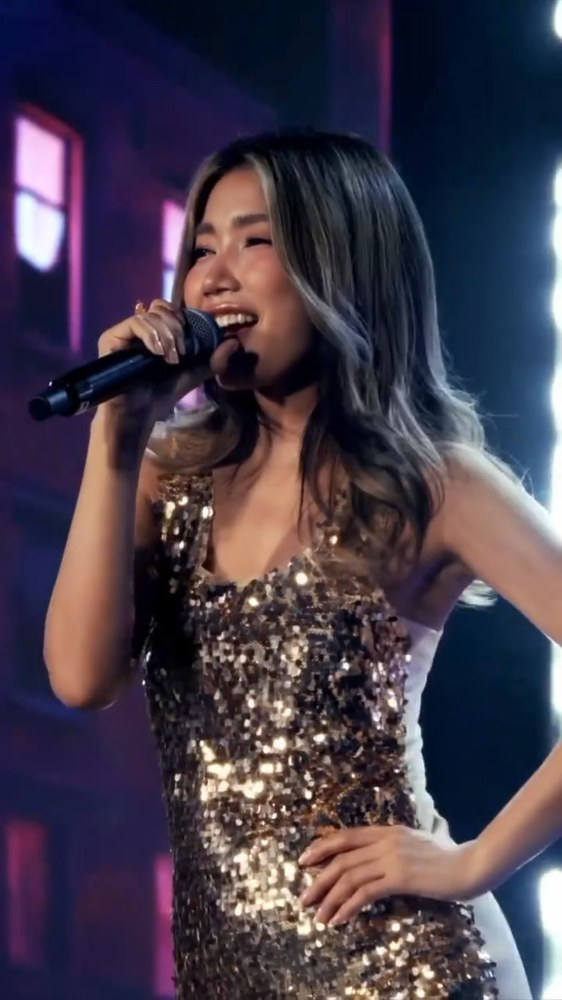

Лаос
Исполнитель

Тинла
Тинлапхон Махавонг
р. 2002
📍 Кхон
→ Вьентьян
Ранее выступала под именем Thinlamphone.
В своём творчестве сочетает традиционную лаосскую музыку морлам с поп-музыкой, R&B и танцевальными жанрами.
Представляла Лаос на фестивале Round Festival в Южной Корее и выступала на саммитах АСЕАН.
Также гастролировала в США.
Страна
Песня
BAE
Малыш
15 октября певица рассказала в прямом эфире TikTok, что выбранная зрителями версия «BAE» была лишь демозаписью и её перерабатывают специально для Евровидения Азия.
BAE
Малыш
| I come alive when I see ya | Я оживаю, когда вижу тебя, |
| And I don't think twice 'cause I know that I need ya | И ни секунды не сомневаюсь, ведь знаю, что ты мне нужен. |
| And the way that you moving your hips, I can't control | Когда ты двигаешь бёдрами, я теряю контроль. |
| My body, my body don't lie every time I see ya | Моё тело не умеет лгать каждый раз, когда я вижу тебя. |
| Chai khoy lalai you're on my mind | Моё сердце тает, я всё время думаю о тебе. |
| Staying up until midnight | Не сплю до самой полуночи. |
| Mi chao khang kai can I call you mine? | Когда ты рядом со мной, могу ли я назвать тебя своим? |
| Just for a night | Хотя бы на одну ночь. |
| Tell me can I call you bae, bae, bae, bae, bae, bae, bae, bae, bae, bae, bae | Скажи, могу ли я называть тебя малыш, малыш, малыш, малыш, малыш, малыш, малыш, малыш, малыш, малыш, малыш? |
| Can I call you bae, bae, bae, bae, bae, bae, bae, bae, bae | Могу ли я называть тебя малыш, малыш, малыш, малыш, малыш, малыш, малыш, малыш, малыш? |
| Anything you want, you can make a wish | Всё, что пожелаешь, — только загадай желание. |
| We can make it fun, I'll give you a kiss | Мы можем повеселиться, я подарю тебе поцелуй. |
| You're so bae, bae, bae, bae, bae, bae, bae, my bae | Ты мой малыш, малыш, малыш, малыш, малыш, малыш, малыш, мой малыш. |
| Tell me how to get slow | Скажи, как нам замедлиться? |
| I'm attracted by the way | Меня так привлекает то, |
| That you can dance though | Как ты умеешь танцевать. |
| It's the way that we ride, way that we touch | То, как мы двигаемся, как прикасаемся друг к другу. |
| Lay down, lay down, baby, now let's go | Ложись, ложись, малыш, давай начнём. |
| Na na let go | На-на, отпусти себя. |
| No, no, angel | Нет, нет, ангел мой. |
| If I lose you, say so | Если я потеряю тебя, просто скажи. |
| Hey now, wait now | Эй, постой, подожди. |
| Chai khoy lalai you're on my mind | Моё сердце тает, я всё время думаю о тебе. |
| Staying up until midnight | Не сплю до самой полуночи. |
| Mi chao khang kai can I call you mine? | Когда ты рядом со мной, могу ли я назвать тебя своим? |
| Just for a night | Хотя бы на одну ночь. |
| Tell me can I call you bae, bae, bae, bae, bae, bae, bae, bae, bae, bae, bae | Скажи, могу ли я называть тебя малыш, малыш, малыш, малыш, малыш, малыш, малыш, малыш, малыш, малыш, малыш? |
| Can I call you bae, bae, bae, bae, bae, bae, bae, bae, bae | Могу ли я называть тебя малыш, малыш, малыш, малыш, малыш, малыш, малыш, малыш, малыш? |
| Anything you want, you can make a wish | Всё, что пожелаешь, — только загадай желание. |
| We can make it fun, I'll give you a kiss | Мы можем повеселиться, я подарю тебе поцелуй. |
| You're so bae, bae, bae, bae, bae, bae, bae, my bae | Ты мой малыш, малыш, малыш, малыш, малыш, малыш, малыш, мой малыш. |
| Tell me can I call you bae, bae, bae, bae, bae, bae, bae, bae, bae, bae, bae | Скажи, могу ли я называть тебя малыш, малыш, малыш, малыш, малыш, малыш, малыш, малыш, малыш, малыш, малыш? |
| Can I call you bae, bae, bae, bae, bae, bae, bae, bae, bae | Могу ли я называть тебя малыш, малыш, малыш, малыш, малыш, малыш, малыш, малыш, малыш? |
| Anything you want, you can make a wish | Всё, что пожелаешь, — только загадай желание. |
| We can make it fun, I'll give you a kiss | Мы можем повеселиться, я подарю тебе поцелуй. |
| You're so bae, bae, bae, bae, bae, bae, bae, my bae | Ты мой малыш, малыш, малыш, малыш, малыш, малыш, малыш, мой малыш. |